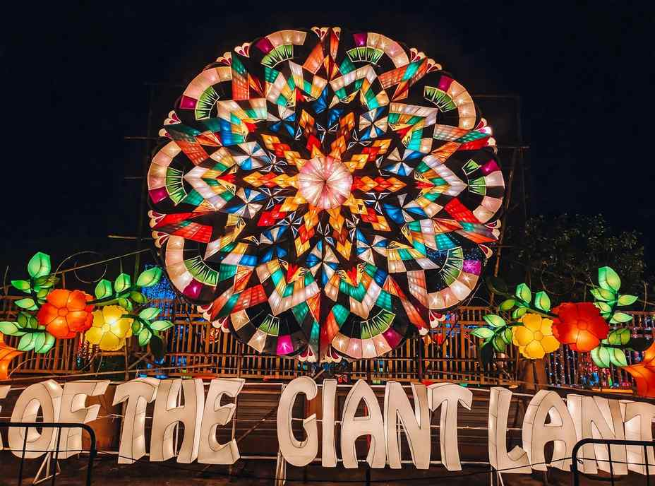

Christmas in Pampanga starts early and lasts long. In San Fernando, the provincial capital, lanterns go up along the main roads months before December, and the city calls itself the Christmas Capital of the Philippines. In October 2026 it was named Asia's Leading Cultural City Destination at the World Travel Awards, largely on the strength of its lantern tradition.
Most visitors come for one night: the Giant Lantern Festival. But the season holds much more. There are lantern processions before every dawn Mass, workshops where parols are still built by hand, heritage churches that survived lahar, and a Noche Buena table of cashew nougat, cookies and thick hot chocolate that is very much its own.
This guide is about the whole season: what is on from mid-December to New Year's Day, where to see and buy lanterns, which churches to visit for Simbang Gabi, what to eat and take home, and a two-day plan to fit it together.

Christmas in Pampanga at a glance
- Main base: City of San Fernando, about one to two hours north of Manila on NLEX
- Giant Lantern Festival: listed for Saturday, December 19, 2026; confirm with the City Tourism Office
- Lubenas processions: on the eves of Simbang Gabi, December 16 to 24
- Lantern displays: nightly after the competition until January 1
- Christmas food to try: turrones de casoy, sans rival, San Nicolas cookies and tsokolate
The Giant Lantern Festival, in Brief
The Ligligan Parul is the season's headline event. Barangays of San Fernando compete with steel-framed lanterns about 20 feet across, each with thousands of bulbs that flash in patterns timed to music. Early listings put the 2026 competition on Saturday, December 19, at Robinsons Starmills, where it has been held for 17 years. Wait for the City Tourism Office to confirm before you book.
In 2025 the lanterns stayed on display at Starmills every night after the competition, with extra showings around the city, a Christmas Eve exhibition between City Hall and the Metropolitan Cathedral, and a final lighting on January 1. That pattern means you don't have to be there on competition night to see them. For how the judging works, which night to pick and how to get home after the show, read our Giant Lantern Festival guide.
Lubenas: The Lantern Processions Before Dawn Mass
The giant lanterns grew out of an older custom that is still alive. Lubenas, or Lubenas ning Pasku, is a lantern-led procession held on the eve of each Simbang Gabi from December 16 to 24, in Pampanga and parts of Tarlac. Villagers carry handmade parols and the image of their patron saint on a carroza through the streets, a nine-day spiritual preparation for Christmas. In some towns the last procession, on Christmas Eve, is called maitinis.
- MagalangThe town has revived lubenas on a grand scale. Its opening parade, "Ing Banal a Batuin ning Magalang", drew more than 400 handmade lanterns from about 25 barangays in 2025, starting on December 12 and ending at the 19th-century San Bartolome Church.
- Angeles CityThe heritage district hosts its own lubenas presentation in mid-December. In 2024, eight barangays filled the old streets with more than a hundred lanterns.
- Mabalacat and Sto. TomasMabalacat holds its maitinis on Christmas Eve, as devotees and saints converge under lanterns. Sto. Tomas pairs its lubenas with a Christmas town display.
Exact dates and routes are set by each town and barangay, usually announced on the municipal Facebook pages in early December. The processions are free and devotional, so watch from the side of the road and keep the way clear for the carroza.
Where to See and Buy a Parol
San Fernando's lantern-making began in its western barangays. In 1908, Francisco Estanislao, a salt vendor from Barangay Sta. Lucia, shaped a big lantern from bamboo and cloth for the Christmas dawn Masses, and Sta. Lucia is still home to some of the city's best-known makers. Workshops are also clustered in Barangay Del Pilar and around Dolores, and roadside stalls appear across the city as December nears.
Small parols in capiz or plastic are easy to carry home. Electric lanterns with a rotor, the moving lights you see at the festival, come in many sizes. Before you buy, ask a few questions:
- What powers it? Check the plug and whether the controller comes with it.
- Can it travel? Ask for a box or extra packing if you are flying, and whether the frame folds or comes apart.
- Can it go outdoors? Plastic and capiz handle the weather better than paper.
- Can it be made to order? Many makers take custom work, so ask about lead time if you want a particular design or size.
Buying directly from a workshop keeps money in the craft. Lantern makers say the season starts in July, and a giant festival lantern takes three to five months to build.
Heritage Churches for Simbang Gabi
Simbang Gabi, the nine dawn Masses from December 16 to 24, is a good reason to see Pampanga's old churches at their best. Arrive early, as pews fill well before the dawn start, and check each parish's Mass times in advance.
- Metropolitan Cathedral, San FernandoAcross from City Hall, with food shops nearby for breakfast after Mass. The Christmas Eve lantern exhibition is held between the two buildings.
- San Guillermo Church, BacolorBuilt by Augustinians in 1576 and half-buried by lahar after the 1991 eruption of Mt. Pinatubo. It is still a working church, and the effect of seeing its arches so close to the ground stays with you.
- Betis Church, GuaguaThe baroque church of St. James the Apostle dates to the 1660s, with a painted ceiling that draws art lovers. Entry is free.
- San Agustin Church, LubaoOften called the oldest surviving parish in Pampanga, and a fitting stop if you are heading west.
What to Eat and Take Home
Pampanga is known as the country's culinary capital, and December is when the old family recipes come out. The Noche Buena table here leans on sweets: turrones de casoy, a crunchy nougat of honey and cashew; sans rival; carabao's milk pastillas; and San Nicolas cookies, butter biscuits stamped with an image of the saint. Hot tsokolate frothed with a wooden batirol goes with all of them.
For sisig and the restaurants worth a detour in Angeles, see our Pampanga food trip.
A Two-Day Christmas Plan
- Day 1Lanterns and sweets
Arrive in San Fernando by midday. Browse parol stalls and workshops around Sta. Lucia and Dolores, then stop at a bakeshop for turrones and pastillas. In the evening, see the giant lanterns at Starmills, or the competition itself if your dates line up.
- Day 2Dawn Mass and heritage
Hear Simbang Gabi at the Metropolitan Cathedral or drive to Betis Church. After breakfast, visit the half-buried church in Bacolor. In the afternoon, head to Angeles for lunch, and if it is mid-December, stay for a lubenas procession in Angeles or Magalang.
Practical Tips for December
- Beat the trafficNLEX and the roads into San Fernando are heaviest on December weekends and on festival night. Leave Manila early, or stay over.
- Book rooms earlyRooms near Starmills go fast around the competition. Angeles has more choice if you fly through Clark.
- Dress for cool nightsPre-dawn Masses and late lantern nights can feel cool, so bring a light jacket.
- Carry cashStalls, small bakeshops and tricycles mostly take cash.
Pampanga's Christmas is best taken slowly. One night of giant lanterns is worth the trip, but the quieter parts stay with you longer: a candlelit lubenas in a small town, a parol bought from the family that made it, and a box of turrones for the table at home.

Comments
No comments yet. Been here recently? Share a tip or ask a question.
Leave a Reply